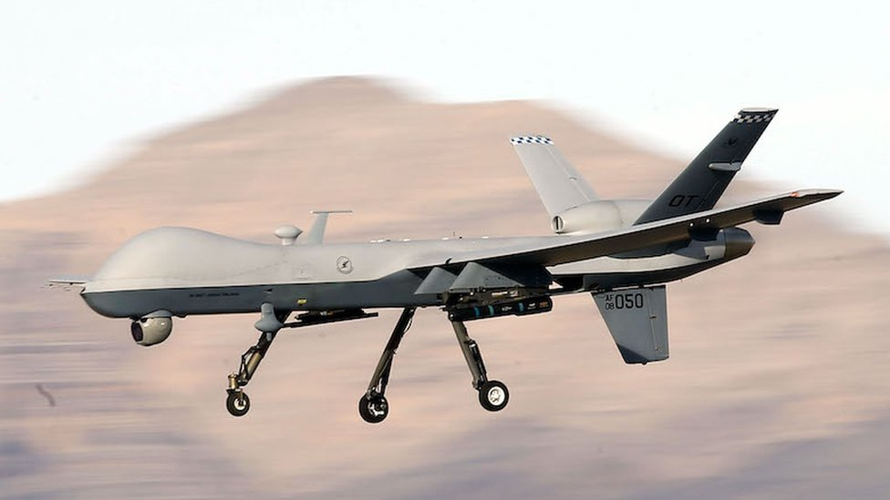

Pros and cons
The pros of drones and there strikes are being able to eliminate HVT [high value targets] with more percision than a air to surface guided munitions.
These drones provide ground cover for troops on the ground and made multipule apperences during the war on terror. These drones can respond to thrats faster than regular pilots.
